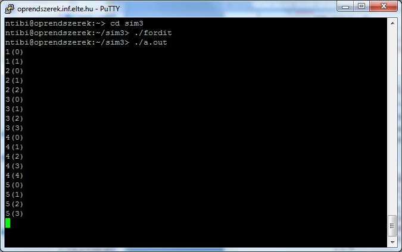

")
")
")
")
Esettanulmány az operációs rendszerbeli funkciók (OS funkciók) megvalósításához
Szemafor
Most valósítsunk meg egy bináris szemafort! Legyen a rendszerben egy szemafor, amely kezdetben nyitott állapotú. Két szemaforműveletet valósítunk meg rendszerhívásként: a szemafor nyitását és zárását. Ha zárás műveletét lezárt szemafor esetén hajtja végre egy folyamat, akkor blokkolódik. Ha a nyitás műveletét hajtja végre egy folyamat, és a szemafor nyitva van, vagy nem a folyamat zárta le a szemafort, akkor a rendszerhívás térjen vissza hibakóddal, ha viszont van a szemafor miatt várakozó folyamat, akkor a várakozó folyamatot engedjük tovább. A rendszerhívás hiba esetén hibakóddal, különben nullával térjen vissza. A visszatérési értéket a megosztott memória elejéről olvassuk ki.
Lássuk a rendszerhívások kódját!
Tehát az ötös számú rendszerhívás lesz a nyitás, és a hatos lesz a zárás. A rendszerhívás kerneloldalán fogadjuk ezeket, és hívjuk meg a kezelő kernelfüggvényeket!
A feladat megoldásánál három eseményt kell figyelembe venni (szemafornyitás, szemaforzárás és folyamat végén meghívott exit rendszerhívás). Most összegezzük a feltételeinket!
- Tárolnunk kell a szemafor állapotát (nyitott, csukott) – ez két állapot.
- Tudnunk kell, hogy melyik folyamat zárta le a szemafort, mivel csak a lezáró folyamat nyithatja ki.
- Ha a lezáró folyamat véget ér anélkül, hogy kinyitotta volna, akkor a folyamat törlésekor nyissuk ki a szemafort.
- Ha több folyamat is várakozik a szemaforra, akkor a legrégebben várakozó mehessen tovább.
A megvalósítás során elegendő egyetlen sort használnunk (_sem néven). A sorban az első folyamat lesz, amelyik lezárta a szemafort, a sorban lévő többi folyamat pedig a szemaforra várakozók. A szemafor állapota következik a sor állapotából. Ha a sor üres, akkor a szemafor nyitva, különben zárva van.
Most nézzük, mit kell tenni, ha az aktuális folyamat meghívta a zárást! A folyamat azonosítója (PID-je) mindenképpen bekerül a sorba, ha azonban a sor üres (még a berakás előtt), akkor a szemafor nyitva volt, tehát az aktuális folyamat futhat tovább, csak „maga mögött” bezárja a szemafort azzal, hogy berakjuk a sorba. Ha a sor nem üres, akkor a szemafor zárva van, tehát az aktuális folyamatot blokkoljuk, és ütemezőt hívunk. A rendszerhívás mindig nullával tér vissza, tehát nullát tegyünk a megosztott memória kezdetére.
Szemafornyitás esetén ellenőrizzük, hogy az aktuális folyamat zárta-e le a szemafort; ha nem, beállítjuk a hibakódot. Ha az aktuális folyamat zárta le, kivesszük a sor első elemét (aktuális folyamatot). Ha a sor nem ürült ki, akkor a sor első elemét futáskész állapotba rakjuk, eddig várakozott, már ne várakozzon; ez lesz a szemafor lezárója (sor első eleme). Mivel a nyitás nem blokkoló, mindig az aktuális folyamatot tegyükvissza a processzorra.
A harmadik esemény a folyamat törlése. Törléskor hívjuk meg a szemafornyitást. Ha a folyamat zárta le a szemafort, és elfelejtette kinyitni, akkor a függvényhívás kinyitja. Ha nem a folyamat zárta le, akkor a nyitás függvény úgysem nyitja ki a szemafort, legfeljebb a megosztott memóriába ír egy hibakódot.
A következő néhány képernyőkép a példaprogram fordítását és futtatását mutatja.
Az itt látható program letölthető, működését egy videóval szimuláltuk.
- Fájl letöltése: A programcsomag ide kattintva tölthető le! című háttéranyag letöltése
- Információ az állományról:
- Fájlméret: 0.01 MB
Web szerver
Így a tananyag végére érve már minden tudásunk megvan ahhoz, hogy komolyabb programokat is elkészítsünk. Ilyen például a következő program, ami egy egyszerűsített web szervert valósít meg.
- Fájl letöltése: A program ide kattintva tölthető le! című háttéranyag letöltése
- Információ az állományról:
- Fájlméret: 2.34 KB